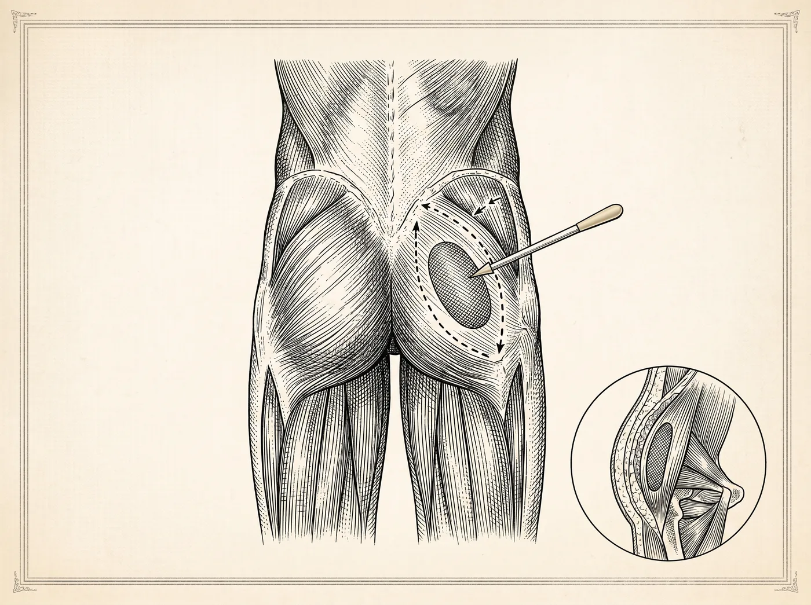

Corpo · Procedimento injetável
O preenchimento de glúteo é um procedimento injetável que busca acrescentar volume, dar projeção ou harmonizar o contorno da região, sem os cortes de uma cirurgia de implante. Pode ser realizado com ácido hialurônico ou com preenchedor de longa duração — a escolha é definida na avaliação individual.

Objetivos do procedimento
Todo procedimento envolve riscos. A avaliação individual com um cirurgião plástico é indispensável para indicar o tratamento adequado a cada caso.
Entenda o procedimento
O preenchimento de glúteo é um procedimento injetável que busca acrescentar volume, dar projeção ou harmonizar o contorno da região, sem os cortes de uma cirurgia de implante. O material preenchedor é aplicado nas camadas indicadas, com agulha ou cânula, em ambiente adequado e sob os cuidados da equipe médica. Com o avanço e a difusão dos preenchedores injetáveis, a colocação de prótese (implante de silicone) na região tornou-se menos frequente na prática atual, embora continue existindo como possibilidade em situações específicas. Por ser injetável, costuma ter caráter menos invasivo do que uma cirurgia — o que não dispensa a avaliação criteriosa nem afasta os riscos próprios de qualquer procedimento.
O planejamento é sempre individual: a quantidade de produto, os pontos de aplicação e o tipo de preenchedor dependem da anatomia, da qualidade dos tecidos e dos objetivos de cada pessoa, definidos na avaliação com o cirurgião plástico. Não existe uma abordagem única que sirva a todos os casos, e a escolha da técnica é uma decisão médica tomada caso a caso.
O ácido hialurônico é um gel biocompatível, semelhante a uma substância naturalmente presente no organismo, empregado há bastante tempo em procedimentos de preenchimento. Aplicado por via injetável, acrescenta volume desde o momento da aplicação e é reabsorvido de forma gradual pelo corpo, o que lhe confere caráter temporário. Por essa razão, seu efeito tende a diminuir ao longo do tempo, e novas aplicações podem ser consideradas conforme a reavaliação de cada caso.
O preenchimento de longa duração emprega materiais formulados para manter o efeito por um período mais prolongado do que o ácido hialurônico. A aplicação também é feita por via injetável, e esses materiais são igualmente escolhidos por sua biocompatibilidade. A opção por um tipo ou por outro considera as características dos tecidos, o objetivo pretendido e o perfil de cada pessoa, e é definida na avaliação individual. Cada material tem comportamento e durabilidade próprios, temas que devem ser esclarecidos com o cirurgião antes da decisão.
De modo geral, o preenchimento é considerado por pessoas que desejam mais volume, projeção ou melhora de contorno na região e que não alcançam esse objetivo apenas com exercício físico. Pode também ser avaliado quando não há gordura corporal suficiente para a enxertia — caminho que utiliza gordura do próprio paciente — ou quando se prefere um procedimento injetável a uma cirurgia. Costuma ser uma opção analisada em adultos com condições de saúde compatíveis e com expectativas alinhadas ao que a técnica pode propor.
A indicação, porém, nunca é automática: depende de uma avaliação individual que leva em conta a anatomia, o histórico de saúde, os hábitos e os objetivos de cada pessoa. É nessa conversa com o cirurgião plástico que se define se o preenchimento é adequado, qual tipo de preenchedor faz mais sentido para o caso ou se outra abordagem é preferível.
Por ser injetável, o preenchimento de glúteo costuma ter caráter ambulatorial, com a aplicação do produto nos pontos definidos pela equipe. Reações locais leves — como sensibilidade, discreto inchaço ou pequenos hematomas na área tratada — podem ocorrer e tendem a ser temporárias. As orientações de cuidado, incluindo posição do corpo, atividades e consultas de retorno, são passadas pela equipe de acordo com o tipo de preenchedor utilizado e com cada caso.
A evolução varia de pessoa para pessoa e não pode ser antecipada nem garantida, pois a resposta do organismo é sempre particular. Como todo procedimento, o preenchimento envolve riscos e possíveis intercorrências, que fazem parte do esclarecimento antes da decisão. Seguir as orientações recebidas e comparecer ao acompanhamento contribui para conduzir cada etapa com mais tranquilidade.
Realizar o preenchimento em um serviço dedicado à cirurgia plástica significa contar com equipe médica e estrutura preparada para conduzir o procedimento e acompanhar as etapas seguintes, com condições de assepsia e suporte caso alguma intercorrência precise ser manejada. A escolha do ambiente e do profissional faz parte da segurança de qualquer procedimento e deve ser considerada em conjunto com a avaliação médica.
Ainda assim, nenhuma estrutura elimina os riscos inerentes a um procedimento injetável. A avaliação individual com o cirurgião plástico permanece indispensável para indicar — ou não — o preenchimento, definir o tipo de preenchedor e esclarecer o que esperar em cada etapa, sempre a partir do exame físico, do histórico de saúde e de uma conversa franca sobre objetivos.
Perguntas frequentes
O ácido hialurônico é um gel biocompatível reabsorvido de forma gradual pelo corpo, o que lhe confere caráter temporário. O preenchimento de longa duração emprega materiais formulados para manter o efeito por um período mais prolongado. A escolha considera os tecidos, o objetivo e o perfil de cada pessoa, e é definida na avaliação individual.
Com o avanço dos preenchedores injetáveis, a colocação de prótese na região tornou-se menos frequente na prática atual, embora continue existindo como possibilidade em situações específicas. A indicação de cada caminho é definida na avaliação individual.
Por ser injetável, o procedimento costuma ter caráter ambulatorial. Reações locais leves — sensibilidade, discreto inchaço ou pequenos hematomas na área tratada — podem ocorrer e tendem a ser temporárias. As orientações de cuidado variam conforme o tipo de preenchedor utilizado e cada caso.
Não. O ácido hialurônico é reabsorvido gradualmente pelo organismo, e mesmo os materiais de longa duração têm comportamento e durabilidade próprios. Novas aplicações podem ser consideradas conforme a reavaliação de cada caso, sempre com o cirurgião.
O próximo passo
Cada caso é um caso — e é exatamente assim que tratamos. Agende uma avaliação e converse com quem vive essa especialidade.